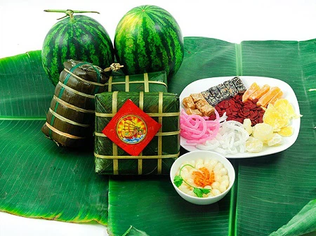
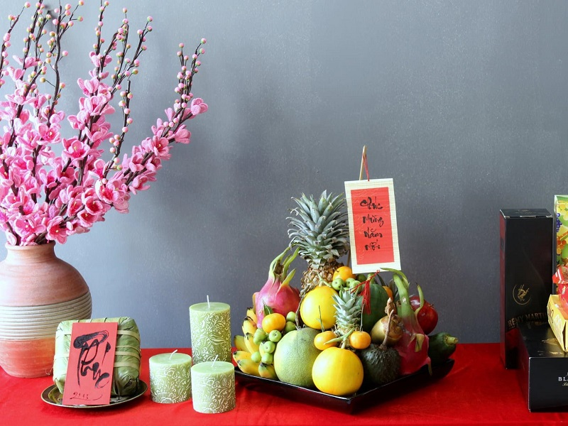
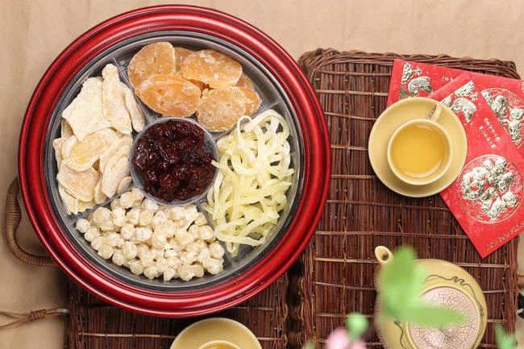
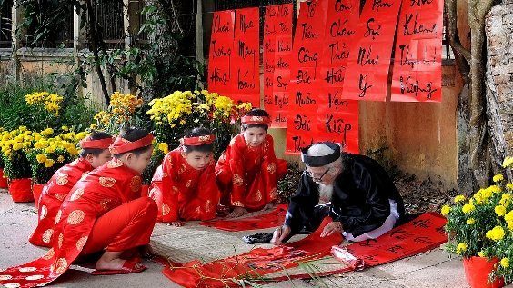
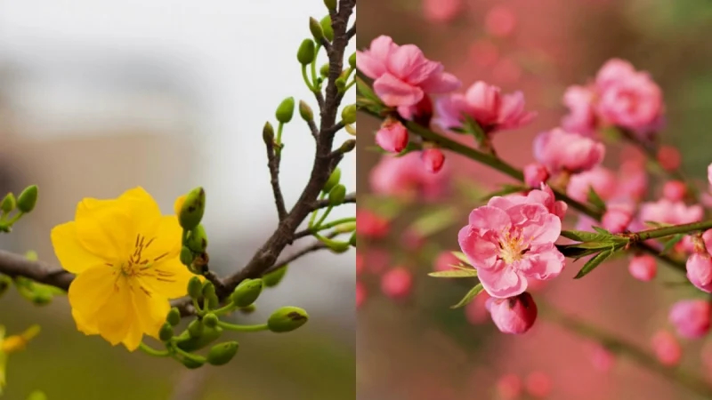
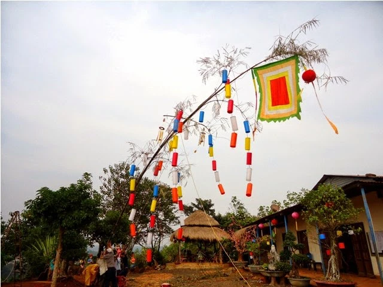
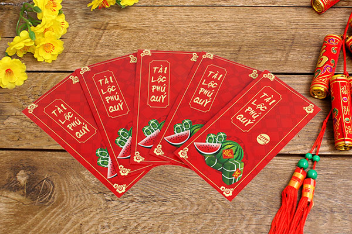

Những biểu tượng của Tết cổ truyền Việt Nam
Tết Nguyên Đán là dịp lễ cổ truyền lớn nhất trong văn hóa của người Việt, cũng là lúc ta cảm nhận được rõ ràng nhất những nét đẹp thuần túy trong văn hóa dân gian. Mâm ngũ quả, bánh chưng, cây nêu... và rất nhiều những hình ảnh khác đã trở thành những hình ảnh không thể thiếu mỗi dịp Tết đến xuân về. Với mỗi vùng miền thì những biểu tượng này lại có ý nghĩa rất riêng.
Có thể nói bánh chưng - bánh tét là những món ăn không thể thiếu trong mâm cỗ Tết cổ truyền của người Việt. Bánh chưng tượng trưng cho truyền thống "uống nước nhớ nguồn", vừa gợi nhớ cảm giác háo hức thời thơ bé ngồi canh nồi bánh chưng ấm cúng, vừa là bữa ăn sum họp gia đình trong những ngày đầu năm mới. Bánh chưng hình vuông, màu xanh, tượng trưng cho đất, âm. Bánh dầy hình tròn, màu trắng, tượng trưng trời, dương, thể hiện triết lý Âm Dương của phương Đông nói chung và triết lí vuông tròn của người Việt Nam nói chung. Giống như bánh chưng ở miền Bắc Bộ, bánh tét cũng là món ăn truyền thống không thể thiếu trong dịp Tết phương Nam. Bánh tét được cho là sự tổng hòa của nhiều nền văn hóa, trong đó có văn hóa Champa với tín ngưỡng "phồn thực". Vì thế, bánh tét có hình cái Linga, biểu tượng cho sự sống, sự sinh sôi, trường tồn, hùng mạnh… Đòn bánh Tét mang nhiều ý nghĩa nhân sinh cao cả. Bánh được bọc nhiều lá như hình ảnh người mẹ bao bọc lấy người con, như anh chị em một nhà đùm bọc lẫn nhau. Không chỉ vậy, bánh tét xanh nhân nhụy vàng như màu xanh của đồng quê, của đời sống an vui xóm làng, gợi về ước mơ "an cư lạc nghiệp" trong xuân mới. Tất cả những ý nghĩa đó đã đề cao sức lao động của con người, sự hòa hợp của trời đất, của con người với thiên nhiên và thể hiện sự hướng về nguồn cội.
Mâm ngũ quả là mâm quả gồm 5 loại khác nhau, mỗi loại tượng trưng cho một ước nguyện của gia chủ thông qua tên gọi và màu sắc. Ngoài ra,“ngũ” còn thể hiện ước muốn của người Việt đạt được ngũ phúc lâm môn: Phúc, quý, thọ, khang, ninh. Mâm ngũ quả có nguồn gốc từ đạo Phật, được nhắc đến trong kinh Vu-lan-bồn (Ullambana Sutra) với hình ảnh "trái cây năm màu". 5 màu tượng trưng cho "ngũ thiện căn" theo quan niệm nhà Phật, gồm: tín căn (lòng tin), tấn căn (ý chí kiên trì), niệm căn (ghi nhớ), định căn (tâm không loạn), huệ căn (sáng suốt). Người miền Bắc bày mâm ngũ quả theo thuyết Ngũ hành trong văn hóa phương Đông là vạn vật dung hòa cùng trời đất. Vì thế, mâm ngũ quả cũng phải phối theo 5 màu: Kim - trắng, Mộc - xanh, Thủy - đen, Hỏa - đỏ, Thổ - vàng. Mâm ngũ quả miền Bắc thường có 5 loại quả: Chuối, bưởi, đào, hồng, quýt. Cách trình bày truyền thống là: Chuối ở dưới cùng, đỡ lấy toàn bộ các loại quả khác. Chính giữa là quả bưởi hoặc phật thủ vàng. Các loại quả bày xung quanh. Những chỗ còn trống cài xen kẽ quýt vàng, táo xanh, hoặc những quả ớt chín đỏ. Mâm ngũ quả miền Trung chịu sự giao thoa văn hóa 2 miền Bắc - Nam nên mâm ngũ quả vẫn bày biện đủ các loại quả: Chuối, mãng cầu, sung, dừa, đu đủ, xoài… Người miền Nam bày mâm ngũ quả theo mong muốn “Cầu sung vừa đủ xài” ước mong năm mới đủ đầy, sung túc, tương ứng với 5 loại quả: Mãng cầu, sung, dừa, đu đủ, xoài. Ngoài ra, còn có thêm quả thơm (dứa) với mong muốn con cháu đầy nhà và một cặp dưa hấu xanh vỏ đỏ lòng để cầu may mắn.
Không chỉ là món ăn chơi thơm ngon, hấp dẫn cho cả người lớn và trẻ em, nhâm nhi miếng mứt ngọt ngào bên tách trà ấm nóng từ xưa đã trở thành một thú vui ngày tết. Mứt thường được chế biến từ các loại trái cây và một số loại củ sên với đường. Các loại mứt Tết truyền thống gồm có mứt hạt sen, mứt dừa, mứt gừng, mứt bí, mứt quất,... Mỗi loại có màu sắc, hương vị đặc trưng và ý nghĩa riêng, ví dụ như mứt hạt sen thể hiện mong muốn năm mới sum họp, con cháu đầy nhà; mứt quất mang ý nghĩa cho những vận may, an lành và thịnh vượng trong năm mới,...
Ngày nay, có nhiều thứ tồn tại song hành cùng Tết cổ truyền và một trong những nét văn hóa khó phai mờ ấy chính là câu đối Tết. Trước đây từ các nho học cho tới những người bình dân cũng đều trọng tục treo câu đối đỏ ngày Tết. Những câu đối này được viết bằng chữ Nho thường là màu đen hoặc vàng, trên những tấm giấy đỏ hay hồng đào cho nên thường được gọi chung là câu đối đỏ. Màu đỏ của liễn (câu đối) được dùng không ngoài mong muốn mang lại may mắn cho gia chủ. Người xưa xem việc viết và treo câu đối là một thú vui tao nhã. Ngày xuân xưa, khi đến chúc Tết nhau trong phần quà cáp đều có được đôi câu đối tặng nhau thì thật trân quý.
Từ xa xưa, hoa đào đã được coi là tinh hoa của Ngũ hành, có thể xua đuổi ma quỷ và mang đến cuộc sống bình an, hạnh phúc cho con người. Ngoài ra người xưa quan niệm hoa đào tượng trưng cho sự sinh sôi nảy nở. Có cành đào trong nhà ngày Tết thể hiện niềm tin của gia chủ vào một năm an khang thịnh vượng, phát tài, gia đình vui vẻ. Hoa đào đem đến nguồn sinh khí mới, mọi người trong gia đình dồi dào sức khỏe, vạn sự như ý. Người miền Bắc chuộng hoa đào một phần cũng là vì loài hoa này có vẻ đẹp dịu dàng, e lệ mà không kém phần kiều diễm như người con gái xứ Bắc. Đồng thời đây cũng là loài hoa của sự thủy chung và tình cảm khăng khít, như trong Tam quốc ba vị Lưu Bị, Quan Vũ và Trương Phi đã cùng kết nghĩa huynh đệ trong vườn đào. Miền Bắc có hoà đào thì miền Nam có hoa mai. Màu vàng của hoa mai từ lâu được xem là màu tượng trưng cho sự giàu sang, phú quý. thể hiện mong muốn giàu sang, phú quí của gia chủ trong năm mới. Cây mai có rễ cắm sâu vào lòng đất, không bị gục ngã trước gió bão, vậy nên nó còn là biểu tượng cho phẩm chất nhẫn nại, sự bền bỉ và đức hi sinh cao cả của người Việt nói chung. Những đoá mai vàng nợ rộ trong tiết xuân còn cho thấy niềm vui, niềm hân hoan, hạnh phúc, tình yêu thương, tinh thần đoàn kết và gắn bó mọi người lại với nhau.
Cây nêu ở đây là cây tre, cây trúc, bương, lồ ô dài khoảng 5 - 6 mét, chặt sạch lá chỉ để lại trên ngọn nhánh lá. Theo phong tục dân gian Việt Nam, cây nêu được dựng trước sân nhà vào ngày 23 tháng chạp - ngày Táo quân lên chầu trời. Bởi từ ngày này cho tới đêm giao thừa Táo quân vắng mặt, ma quỷ thường nhân cơ hội này lẻn vào quấy nhiễu nên phải trồng cây nêu để trừ tà. Trên ngọn cây có buộc nhiều thứ như túi nhỏ đựng trầu cau, ống sáo, những miếng kim loại lớn nhỏ hay treo những vật dụng có tính chất biểu tượng của địa phương, dân tộc như lá phướn, chuông gió. Khi có giỏ thổi chúng chạm vào nhau và phát ra tiếng leng keng. Người ta tin rằng, những vật treo ở cây nêu và những tiếng động là để báo hiệu cho ma quỷ biết rằng nơi đây là nhà có chủ, không được tới quấy nhiễu. Buổi tối, người ta treo thêm một chiếc đèn lồng để Tổ tiên biết đường về nhà ăn Tết với con cháu. Vì thế cây nêu dường như là cầu nối giữa đất trời, vũ trụ, giữa quá khứ, hiện tại và tương lai.
Lì xì là phiên âm của từ "lợi thị" trong tiếng Trung, có nghĩa là được lợi, được tiền, được may mắn. Do đó, tiền lì xì là tiền đem lại cái may mắn, điều lành, điều tốt cho trẻ em dịp đầu năm. Ý nghĩa của phong bao lì xì không nằm ở số tiền mừng mà quan trọng là ở thiện ý của người tặng. Tiền lì xì thường là những món tiền nhỏ, mang ý nghĩa tinh thần nhiều hơn vật chất. Bên cạnh đó, màu đỏ của chiếc bao lì xì tượng trưng cho như ý, cát tường, thịnh vượng trong suốt cả năm. Đó cũng được coi là màu của niềm hy vọng và sự may mắn.
THÔNG TIN LIÊN HỆ
299/25 TDP Chợ,Đại Mỗ, Nam Từ Liêm, Hà Nội
Lê Tuấn Minh
0396080706
leminhtest@outlook.com.vn
Liên Kết
Halloween Nam
Halloween Nữ
Đồ chơi Halloween
Trang phục hóa trang
HỖ TRỢ